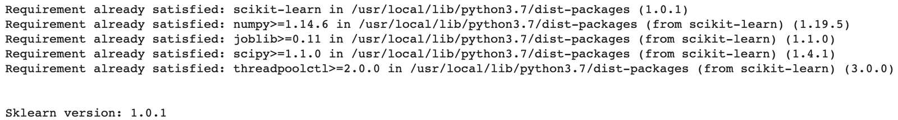
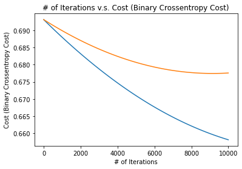

Introduction to Deep Learning · Hands On Implementations · Chapter 12
Implementing Logistic Regression
In this chapter
In the last section, we explored how Linear Regression can be implemented from scratch in Python. We will do a similar workflow in this section for Logistic Regression.
12.1Importing Libraries
Before we start, let’s import some necessary libraries we will be using.
import sklearn # Sklearn
!pip install -U scikit-learn
print("\n\nSklearn version: " + str(sklearn.__version__))
import numpy as np # NumPy
import pandas as pd # Pandas
import matplotlib.pyplot as plt # Matplotlib
from IPython.display import display # For displaying the Pandas DataFrame
import math # Math library
from sklearn.datasets import load_breast_cancer # Import data set from sklearn
from sklearn.model_selection import train_test_split # For splitting the data set into train and test sets
12.2Import Data set from Sklearn
We will be using a data set on benign (harmless) and malignant (harmful) breast tumors. In this data set, we are given some information about the tumor and the corresponding diagnosis.
In this notebook, we will use Logistic Regression to predict whether a tumor is benign or malignant (label) given information about the tumor (features).
In the following code boxes, we import the data from Sklearn.
data = load_breast_cancer(return_X_y=True, as_frame=True) # Import data set from sklearn and store it in "data"X, y = data # "data" is a tuple: (X,y). This line stores the x-values in "X" and the y=values in "y".
y = pd.DataFrame({"diagnosis": y}) # Convert y to a Pandas DataFrame
# Store NumPy equivalents of the X and y variables
X_np = X.values
y_np = y.values12.2.1Quick-Look
In the following code box, we take a quick look at both the features and the labels. Note that while the and values are Pandas Data Frames, you do not need to know about these data types for this assignment.
print("X-Values (Features): ")
display(X.head())
print("\n\nY-Value (Label): ")
display(y.head())X-Values (Features):
| mean radius | mean texture | mean perimeter | mean area | mean smoothness | mean compactness | mean concavity | mean concave points | mean symmetry | mean fractal dimension | radius error | texture error | perimeter error | area error | smoothness error | compactness error | concavity error | concave points error | symmetry error | fractal dimension error | worst radius | worst texture | worst perimeter | worst area | worst smoothness | worst compactness | worst concavity | worst concave points | worst symmetry | worst fractal dimension | |
|---|---|---|---|---|---|---|---|---|---|---|---|---|---|---|---|---|---|---|---|---|---|---|---|---|---|---|---|---|---|---|
| 0 | 17.99 | 10.38 | 122.80 | 1001.0 | 0.11840 | 0.27760 | 0.3001 | 0.14710 | 0.2419 | 0.07871 | 1.0950 | 0.9053 | 8.589 | 153.40 | 0.006399 | 0.04904 | 0.05373 | 0.01587 | 0.03003 | 0.006193 | 25.38 | 17.33 | 184.60 | 2019.0 | 0.1622 | 0.6656 | 0.7119 | 0.2654 | 0.4601 | 0.11890 |
| 1 | 20.57 | 17.77 | 132.90 | 1326.0 | 0.08474 | 0.07864 | 0.0869 | 0.07017 | 0.1812 | 0.05667 | 0.5435 | 0.7339 | 3.398 | 74.08 | 0.005225 | 0.01308 | 0.01860 | 0.01340 | 0.01389 | 0.003532 | 24.99 | 23.41 | 158.80 | 1956.0 | 0.1238 | 0.1866 | 0.2416 | 0.1860 | 0.2750 | 0.08902 |
| 2 | 19.69 | 21.25 | 130.00 | 1203.0 | 0.10960 | 0.15990 | 0.1974 | 0.12790 | 0.2069 | 0.05999 | 0.7456 | 0.7869 | 4.585 | 94.03 | 0.006150 | 0.04006 | 0.03832 | 0.02058 | 0.02250 | 0.004571 | 23.57 | 25.53 | 152.50 | 1709.0 | 0.1444 | 0.4245 | 0.4504 | 0.2430 | 0.3613 | 0.08758 |
| 3 | 11.42 | 20.38 | 77.58 | 386.1 | 0.14250 | 0.28390 | 0.2414 | 0.10520 | 0.2597 | 0.09744 | 0.4956 | 1.1560 | 3.445 | 27.23 | 0.009110 | 0.07458 | 0.05661 | 0.01867 | 0.05963 | 0.009208 | 14.91 | 26.50 | 98.87 | 567.7 | 0.2098 | 0.8663 | 0.6869 | 0.2575 | 0.6638 | 0.17300 |
| 4 | 20.29 | 14.34 | 135.10 | 1297.0 | 0.10030 | 0.13280 | 0.1980 | 0.10430 | 0.1809 | 0.05883 | 0.7572 | 0.7813 | 5.438 | 94.44 | 0.011490 | 0.02461 | 0.05688 | 0.01885 | 0.01756 | 0.005115 | 22.54 | 16.67 | 152.20 | 1575.0 | 0.1374 | 0.2050 | 0.4000 | 0.1625 | 0.2364 | 0.07678 |
Y-Value (Label):
| diagnosis | |
|---|---|
| 0 | 0 |
| 1 | 0 |
| 2 | 0 |
| 3 | 0 |
| 4 | 0 |
12.3## Data set Features
Here is some information about the features and labels of our data set. This information is from Sklearn, the provider of this data.
X-Values (Features)
Radius: Mean of distances from center to points on the perimeter
Texture: Standard deviation of gray-scale values
Perimeter
Area
Smoothness: Local variation in radius lengths
Compactness: Calculated as (perimeter / area - 1.0)
Concavity: Severity of concave portions of the contour
Concave Points: Number of concave portions of the contour
Symmetry
Fractal Dimension: (“coastline approximation” - 1)
The mean, standard error, and “worst” or largest (mean of the three worst/largest values) of these features were computed for each image, resulting in 30 features. For instance, field 0 is Mean Radius, field 10 is Radius SE, field 20 is Worst Radius.
Y-Value (Label)
Label: Diagnosis (Benign or Malignant)
Additional Information
Number of Examples: 569
Number of examples for Benign: 357
Number of examples for Malignant: 212
Features: 30
m = X.shape[0]
n = X.shape[1]
print("Number of examples: " + str(m))
print("Number of features: " + str(n))Number of examples: 569 Number of features: 30
12.4Data set Shape
In the last code box, we found that our data set has 569 examples and 30 features. This kind of familiarity with the data set is always nice to know before creating the Machine Learning model.
12.5Separating Train and Test Sets
There are 569 examples in our data set. We will use about 80% of this data for training our Linear Regression model, and the remaining 20% of the data to evaluate our model.
In the following code box, we split the data set into train and test sets. We will also keep NumPy array versions of the and values for training our model.
X_train, X_test, y_train, y_test = train_test_split(X, y, train_size=0.8, random_state=0)
# For the NumPy versions of the variables, we transpose them so that the examples are in the columns
X_train_np = X_train.values.T
X_test_np = X_test.values.T
y_train_np = y_train.values.T
y_test_np = y_test.values.T
m_train = X_train.shape[0]
m_test = X_test.shape[0]
print("Number of examples in train set: " + str(m_train))
print("Number of examples in test set:\t " + str(m_test))Number of examples in train set: 455 Number of examples in test set: 114
12.6Normalization
For Linear Regression, we must normalize our values. In this case, that means bringing the mean to 0 and the standard deviation to 1 using the following code box. Note that we only do this for the X-Values (Features).
# X_train_np normalization
X_train_np_mean = np.mean(X_train_np, axis=0)
X_train_np_std = np.std(X_train_np, axis=0)
X_train_np_norm = (X_train_np - X_train_np_mean)/X_train_np_std
# X_test_np normalization
X_test_np_mean = np.mean(X_test_np, axis=0)
X_test_np_std = np.std(X_test_np, axis=0)
X_test_np_norm = (X_test_np - X_test_np_mean)/X_test_np_std12.7Gradient Descent
Now we will move onto the Logistic Regression model. For Logistic Regression, we use Gradient Descent. These are the steps of Gradient Descent (the parameter initialization is specific to Logistic Regression, but most of these steps are applied to (mostly) all types of Machine Learning and Deep Learning algorithms):
Initialize Parameters For Logistic Regression, we initialize all parameters to 0.
Hypothesis Function Use the paramters and input features to compute the hypothesis .
Cost Function Use the prediction and the real label to compute the Binary Cross Entropy (Cross Entropy) cost function.
Parameter Update Compute the parameter update for all parameters and update them using the appropriate learning rate (alpha).
Repeat! Repeat Steps 2-4 many times until the cost is sufficiently low.
Remark. Note that these steps are exactly the same as Linear Regression; we have included them here simply as a reminder.
In the following code boxes, we will write code for each of these steps. In the end, we will put these together to train the Logistic Regression model.
12.7.1Initialize Parameters
Since there are 30 features, we will have 31 parameters (weights).
We will initialize 30 of these to 0 and store them in . Remember, should be a row vector, so its shape should be .
There is also 1 bias parameter which we will call . We will also initialize this to 0.
Therefore, there are 31 parameters total. In the following code box, we create a function that initializes the parameters.
def initialize_parameters():
W = np.zeros((1,30))
b = 0
return W, b12.7.2Hypothesis Function
Recall that the hypothesis function for Logistic Regression is: where represents matrix multiplication. First, we create the sigmoid function. Mathematically, this function is: In Python code, this is:
def sigmoid(x):
return 1/(1+e**(-x))Then, we use this function to create the hypothesis function. In Python code, the hypothesis function would be:
y_hat = sigmoid(np.dot(W, X) + b)In the next code box, we create the sigmoid function. In the code box after that, we implement the hypothesis function.
def sigmoid(x):
return 1/(1+math.e**(-x))def hypothesis(X, b, W):
y_hat = sigmoid(np.dot(W, X) + b)
return y_hat12.7.3Cost Function
Now, we define the cost function using and . Remember, when and are matrices, the cost function is defined as follows: where “” and the squaring operation represent element-wise subtraction and squaring. Note that “log” is the natural log function with base . In Python code, this would be:
J = - 1/(m) * (y*np.log(y_hat) + (1-y)*np.log(1-y_hat))(Sidenote: For the Python function, instead of passing in , , and , we will simply pass in (which we computed in the last step). Additionally, we will pass in and .)
In the next code box, we create the cost function.
def cost(y_hat, y, m):
J = - 1/m * np.sum(y*np.log(y_hat) + (1-y)*np.log(1-y_hat))
return J12.7.4Parameter Update
After computing the cost, we have to adjust our parameters. Recall that the parameter update for is: Similarly, this is how we update : Additionally, here are the values for and :
In Python code, these 4 equations would be:
W = W - alpha * dJdW
b = b - alpha * dJdb
dJdW = - 1/m * np.dot((y*y_hat + (1-y)*(1-y_hat)) * y_hat * (1 - y_hat), X.T)
dJdb = - 1/m * np.sum((y*y_hat + (1-y)*(1-y_hat)) * y_hat * (1 - y_hat))Note that in Python, we will run the last two lines of codes first (otherwise we will get an error). In the next code box, we create a function to update our parameters.
def parameter_update(X, y_hat, y, m, alpha, W, b):
dJdW = - 1/m * np.dot((y*y_hat + (1-y)*(1-y_hat)) * y_hat * (1 - y_hat), X.T)
dJdb = - 1/m * np.sum((y*y_hat + (1-y)*(1-y_hat)) * y_hat * (1 - y_hat))
W = W - alpha * dJdW
b = b - alpha * dJdb
return W, b12.7.5Put it all together!
We will now do Step 5 of Gradient Descent (Repeat!) by putting all of the previous functions together into a model function. This is what we will do in this function:
Initialize Parameters
Compute Hypothesis
Compute Cost Function
Update Parameters
Repeat Steps 2-4 for as many iterations as we choose to train our model.
Finally, we return the learned parameters and . While training the model, we will print the cost on the train set every few iterations and, along with this, the cost on the test set. We will keep track of these costs and return some values that are helpful in graphing our performance.
In the following code box, we create the model function.
def model(X_train, y_train, m_train, X_test, y_test, m_test, alpha=0.1, iterations=1000):
# Initialize Parameters
W, b = initialize_parameters()
# Keep track of costs for train and test sets
iteration_nums = [] # X-value for performance graph
costs_train = []
costs_test = []
# Repeat the following steps of Gradient Descent using a for-loop
for i in range(iterations):
# Compute Hypothesis
y_hat = hypothesis(X_train, b, W)
# Compute Cost Function for train set and test set and print this out
# Only do this once every 100 iterations
if i % 100 == 0:
iteration_nums.append(i) # Add iteration number to list of iteration numbers
cost_train = cost(y_hat, y_train, m_train) # Compute cost for train set
costs_train.append(cost_train) # Add cost to list of train costs
y_hat_test = hypothesis(X_test, b, W) # Compute hypothesis for test set
cost_test = cost(y_hat_test, y_test, m_test) # Compute cost for test set
costs_test.append(cost_test) # Add cost to list of test costs
print("\n\nIteration " + str(i))
print("Train set cost: " + str(cost_train))
print("Test set cost: " + str(cost_test))
# Update Parameters
W, b = parameter_update(X_train, y_hat, y_train, m_train, alpha, W, b)
# Print final costs for train and test sets
iteration_nums.append(iterations) # Add iteration number to list of iteration numbers
y_hat = hypothesis(X_train, b, W) # Compute hypothesis for train set
cost_train = cost(y_hat, y_train, m_train) # Compute cost for train set
costs_train.append(cost_train) # Add cost to list of train costs
y_hat_test = hypothesis(X_test, b, W) # Compute hypothesis for test set
cost_test = cost(y_hat_test, y_test, m_test) # Compute cost for test set
costs_test.append(cost_test) # Add cost to list of test costs
print("\n\n")
print("Final train set cost: " + str(cost_train))
print("Final test set cost: " + str(cost_test))
# Return learned parameters
return W, b, iteration_nums, costs_train, costs_test12.8Training the Model
Finally, we get to train the Logistic Regression model. In the next code box, we run the model function with the appropriate arguments and store the learned parameters in the variables and . Note that we feed in the NumPy version of all variables to avoid any errors.
W, b, iteration_nums, costs_train, costs_test = model(X_train=X_train_np_norm, y_train=y_train_np, m_train=m_train, X_test=X_test_np_norm, y_test=y_test_np, m_test=m_test, alpha=1e-5, iterations=10000)Here are the last few lines of the output:
Iteration 0 Train set cost: 0.6931471805599453 Test set cost: 0.6931471805599453 Iteration 100 Train set cost: 0.6926168394928924 Test set cost: 0.692808856963245 Iteration 200 Train set cost: 0.6920899270448324 Test set cost: 0.6924740636550372 Iteration 300 Train set cost: 0.6915664527896891 Test set cost: 0.6921428088307883 Iteration 400 Train set cost: 0.6910464261862582 Test set cost: 0.691815100564864 Iteration 500 Train set cost: 0.6905298565771698 Test set cost: 0.6914909468095597 Iteration 600 Train set cost: 0.6900167531878579 Test set cost: 0.6911703553941437 Iteration 700 Train set cost: 0.6895071251255471 Test set cost: 0.690853334023914 Iteration 800 Train set cost: 0.6890009813782448 Test set cost: 0.6905398902792677 Iteration 900 Train set cost: 0.6884983308137522 Test set cost: 0.6902300316147812 Iteration 1000 Train set cost: 0.6879991821786817 Test set cost: 0.6899237653583078 Iteration 1100 Train set cost: 0.6875035440974908 Test set cost: 0.689621098710084 Iteration 1200 Train set cost: 0.6870114250715268 Test set cost: 0.6893220387418532 Iteration 1300 Train set cost: 0.6865228334780853 Test set cost: 0.6890265923960013 Iteration 1400 Train set cost: 0.6860377775694817 Test set cost: 0.6887347664847071 Iteration 1500 Train set cost: 0.6855562654721372 Test set cost: 0.6884465676891065 Iteration 1600 Train set cost: 0.6850783051856763 Test set cost: 0.6881620025584729 Iteration 1700 Train set cost: 0.6846039045820405 Test set cost: 0.68788107750941 Iteration 1800 Train set cost: 0.6841330714046144 Test set cost: 0.6876037988250605 Iteration 1900 Train set cost: 0.6836658132673691 Test set cost: 0.6873301726543322 Iteration 2000 Train set cost: 0.6832021376540152 Test set cost: 0.6870602050111347 Iteration 2100 Train set cost: 0.6827420519171764 Test set cost: 0.6867939017736365 Iteration 2200 Train set cost: 0.6822855632775732 Test set cost: 0.6865312686835355 Iteration 2300 Train set cost: 0.6818326788232251 Test set cost: 0.6862723113453454 Iteration 2400 Train set cost: 0.6813834055086667 Test set cost: 0.6860170352256989 Iteration 2500 Train set cost: 0.6809377501541801 Test set cost: 0.6857654456526676 Iteration 2600 Train set cost: 0.6804957194450421 Test set cost: 0.6855175478150971 Iteration 2700 Train set cost: 0.6800573199307891 Test set cost: 0.6852733467619603 Iteration 2800 Train set cost: 0.6796225580244963 Test set cost: 0.685032847401727 Iteration 2900 Train set cost: 0.6791914400020753 Test set cost: 0.6847960545017485 Iteration 3000 Train set cost: 0.6787639720015857 Test set cost: 0.6845629726876657 Iteration 3100 Train set cost: 0.6783401600225664 Test set cost: 0.6843336064428254 Iteration 3200 Train set cost: 0.6779200099253815 Test set cost: 0.6841079601077221 Iteration 3300 Train set cost: 0.6775035274305842 Test set cost: 0.6838860378794537 Iteration 3400 Train set cost: 0.6770907181182985 Test set cost: 0.6836678438111948 Iteration 3500 Train set cost: 0.6766815874276165 Test set cost: 0.6834533818116912 Iteration 3600 Train set cost: 0.6762761406560154 Test set cost: 0.6832426556447677 Iteration 3700 Train set cost: 0.6758743829587907 Test set cost: 0.6830356689288581 Iteration 3800 Train set cost: 0.675476319348508 Test set cost: 0.6828324251365521 Iteration 3900 Train set cost: 0.6750819546944726 Test set cost: 0.6826329275941603 Iteration 4000 Train set cost: 0.6746912937222169 Test set cost: 0.682437179481299 Iteration 4100 Train set cost: 0.6743043410130061 Test set cost: 0.6822451838304933 Iteration 4200 Train set cost: 0.6739211010033634 Test set cost: 0.6820569435267975 Iteration 4300 Train set cost: 0.6735415779846118 Test set cost: 0.6818724613074368 Iteration 4400 Train set cost: 0.6731657761024362 Test set cost: 0.681691739761468 Iteration 4500 Train set cost: 0.6727936993564637 Test set cost: 0.6815147813294559 Iteration 4600 Train set cost: 0.6724253515998616 Test set cost: 0.6813415883031746 Iteration 4700 Train set cost: 0.6720607365389557 Test set cost: 0.6811721628253217 Iteration 4800 Train set cost: 0.6716998577328687 Test set cost: 0.6810065068892583 Iteration 4900 Train set cost: 0.6713427185931741 Test set cost: 0.6808446223387639 Iteration 5000 Train set cost: 0.6709893223835727 Test set cost: 0.6806865108678117 Iteration 5100 Train set cost: 0.6706396722195871 Test set cost: 0.680532174020366 Iteration 5200 Train set cost: 0.6702937710682759 Test set cost: 0.6803816131901957 Iteration 5300 Train set cost: 0.6699516217479663 Test set cost: 0.6802348296207109 Iteration 5400 Train set cost: 0.6696132269280075 Test set cost: 0.680091824404816 Iteration 5500 Train set cost: 0.6692785891285431 Test set cost: 0.6799525984847856 Iteration 5600 Train set cost: 0.6689477107203037 Test set cost: 0.6798171526521587 Iteration 5700 Train set cost: 0.6686205939244177 Test set cost: 0.6796854875476523 Iteration 5800 Train set cost: 0.6682972408122436 Test set cost: 0.6795576036610966 Iteration 5900 Train set cost: 0.6679776533052204 Test set cost: 0.6794335013313887 Iteration 6000 Train set cost: 0.6676618331747395 Test set cost: 0.6793131807464662 Iteration 6100 Train set cost: 0.667349782042035 Test set cost: 0.6791966419433028 Iteration 6200 Train set cost: 0.6670415013780937 Test set cost: 0.6790838848079206 Iteration 6300 Train set cost: 0.6667369925035873 Test set cost: 0.6789749090754251 Iteration 6400 Train set cost: 0.6664362565888209 Test set cost: 0.678869714330059 Iteration 6500 Train set cost: 0.6661392946537045 Test set cost: 0.6787683000052759 Iteration 6600 Train set cost: 0.6658461075677419 Test set cost: 0.678670665383834 Iteration 6700 Train set cost: 0.6655566960500416 Test set cost: 0.6785768095979109 Iteration 6800 Train set cost: 0.6652710606693465 Test set cost: 0.6784867316292348 Iteration 6900 Train set cost: 0.6649892018440824 Test set cost: 0.6784004303092399 Iteration 7000 Train set cost: 0.6647111198424285 Test set cost: 0.6783179043192396 Iteration 7100 Train set cost: 0.6644368147824061 Test set cost: 0.6782391521906176 Iteration 7200 Train set cost: 0.6641662866319878 Test set cost: 0.6781641723050424 Iteration 7300 Train set cost: 0.6638995352092252 Test set cost: 0.678092962894699 Iteration 7400 Train set cost: 0.6636365601823986 Test set cost: 0.6780255220425394 Iteration 7500 Train set cost: 0.6633773610701835 Test set cost: 0.6779618476825563 Iteration 7600 Train set cost: 0.6631219372418388 Test set cost: 0.6779019376000714 Iteration 7700 Train set cost: 0.6628702879174133 Test set cost: 0.6778457894320471 Iteration 7800 Train set cost: 0.6626224121679726 Test set cost: 0.6777934006674153 Iteration 7900 Train set cost: 0.662378308915844 Test set cost: 0.6777447686474256 Iteration 8000 Train set cost: 0.6621379769348825 Test set cost: 0.677699890566014 Iteration 8100 Train set cost: 0.6619014148507533 Test set cost: 0.6776587634701875 Iteration 8200 Train set cost: 0.6616686211412375 Test set cost: 0.677621384260432 Iteration 8300 Train set cost: 0.6614395941365521 Test set cost: 0.6775877496911344 Iteration 8400 Train set cost: 0.6612143320196925 Test set cost: 0.6775578563710271 Iteration 8500 Train set cost: 0.6609928328267924 Test set cost: 0.6775317007636482 Iteration 8600 Train set cost: 0.6607750944475026 Test set cost: 0.6775092791878223 Iteration 8700 Train set cost: 0.6605611146253879 Test set cost: 0.677490587818158 Iteration 8800 Train set cost: 0.6603508909583432 Test set cost: 0.6774756226855644 Iteration 8900 Train set cost: 0.6601444208990283 Test set cost: 0.6774643796777853 Iteration 9000 Train set cost: 0.6599417017553194 Test set cost: 0.6774568545399516 Iteration 9100 Train set cost: 0.6597427306907807 Test set cost: 0.6774530428751508 Iteration 9200 Train set cost: 0.6595475047251517 Test set cost: 0.6774529401450147 Iteration 9300 Train set cost: 0.659356020734855 Test set cost: 0.6774565416703242 Iteration 9400 Train set cost: 0.6591682754535193 Test set cost: 0.6774638426316312 Iteration 9500 Train set cost: 0.6589842654725218 Test set cost: 0.6774748380698984 Iteration 9600 Train set cost: 0.6588039872415461 Test set cost: 0.6774895228871542 Iteration 9700 Train set cost: 0.6586274370691596 Test set cost: 0.6775078918471671 Iteration 9800 Train set cost: 0.6584546111234066 Test set cost: 0.6775299395761338 Iteration 9900 Train set cost: 0.6582855054324175 Test set cost: 0.6775556605633856 Final train set cost: 0.6581201158850365 Final test set cost: 0.6775850491621099
12.9Plotting Results
Now, we plot our results to visualize how the model learned. In the following code box, we use Matplotlib and the costs from the model training to create a graph with:
-axis: # of Iterations;
-axis: Cost.
plt.plot(iteration_nums, costs_train)
plt.plot(iteration_nums, costs_test)
plt.title("# of Iterations v.s. Cost (Binary Crossentropy Cost)")
plt.xlabel("# of Iterations")
plt.ylabel("Cost (Binary Crossentropy Cost)")
plt.show()
12.10Making Predictions
In the next code box, we make predictions for some value in the test set. We will print out the prediction along with the real value.
Feel free to play around with this code and make predictions on different examples.
example_num = 10 # This is the example number.
# Feel free to change it, but make sure that it is a non-negative number less than 114 to avoid indexing errors.
hypothesis_example = hypothesis(X_test_np_norm[:,example_num], b, W)[0]
real_label_example = y_test_np[:,example_num][0]
print("Hypothesis: " + str(round(hypothesis_example, 3)))
print("Real Label: " + str(round(real_label_example, 3)))Hypothesis: 1.0 Real Label: 1
It turns out that the model only predicts 7 examples wrong out of 114 total examples in the test set. That’s around 94% accuracy!
For some applications, simple linear models will be sufficient, but many times, we wish our hypothesis function to be more complex, so we turn to Neural Networks.
12.11Congratulations!
You have now implemented a Logistic Regression model from scratch. You should be proud of yourself!
The main takeaway from this assignment is the Gradient Descent algorithm, which has the following steps:
Initialize Parameters
Compute Hypothesis
Compute Cost Function
Update Parameters
Repeat!
I hope you had fun!